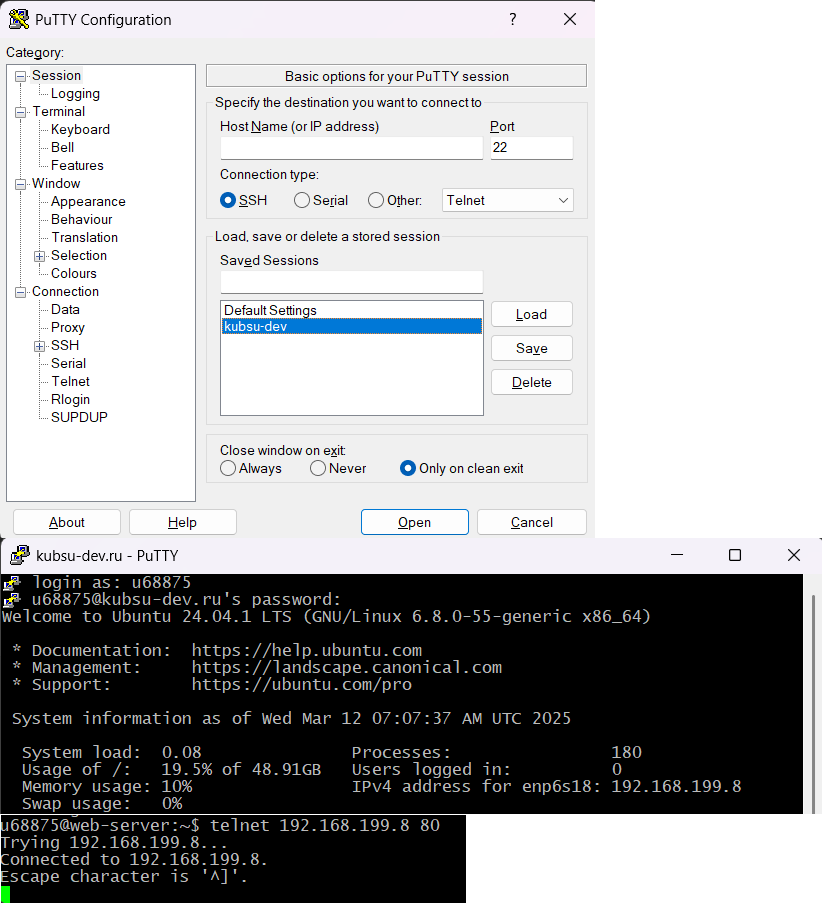
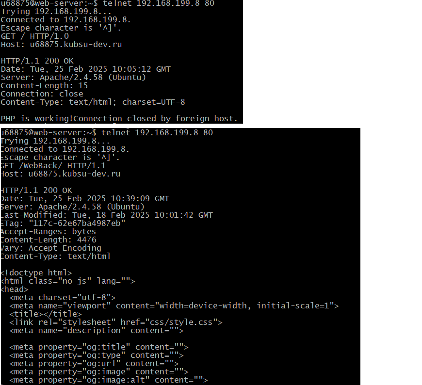
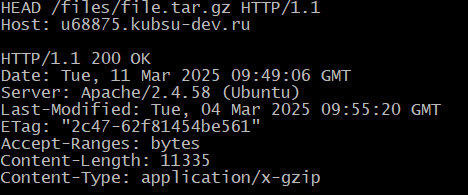
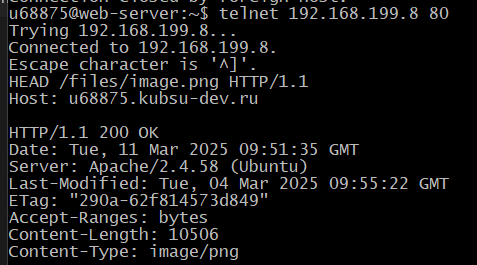
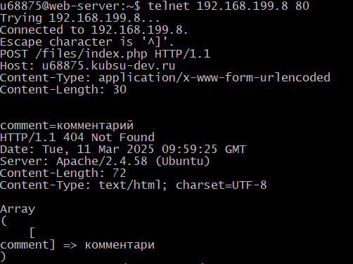
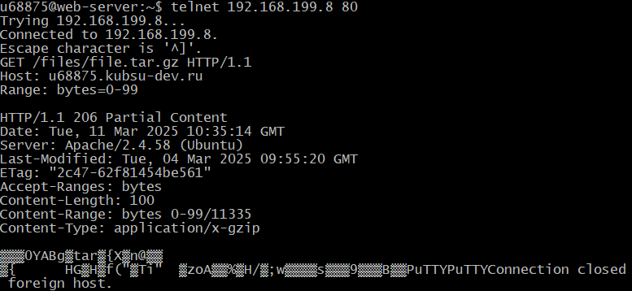
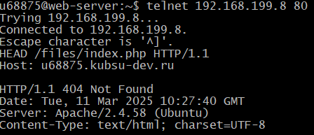

Задание 2
h2 С помощью программы PuTTY подключаемся к серверу, с помощью команды telnet 192.168.199.8 80 получаем удаленный доступ к серверу.

C помощью метода GET получаем страницы в протоколах HTTP 1.0 и HTTP 1.1.

С помощью filezilla загружаем необходимые файлы. Далее при помощи метода HEAD определить размер файла file.tar.gz;

Строка Content-Length отвечает за размер файла в байтах.
При помощи метода HEAD определяем медиатип ресурса image.png

медиатип указан в поле Content-Type
Методом POST отправляем комментарий на сервер по адресу /index.php

Если нужно получить только определенное количество байт файла методом GET используем заголовок Range

Определить кодировку ресурса /index.php при помощи метода HEAD
